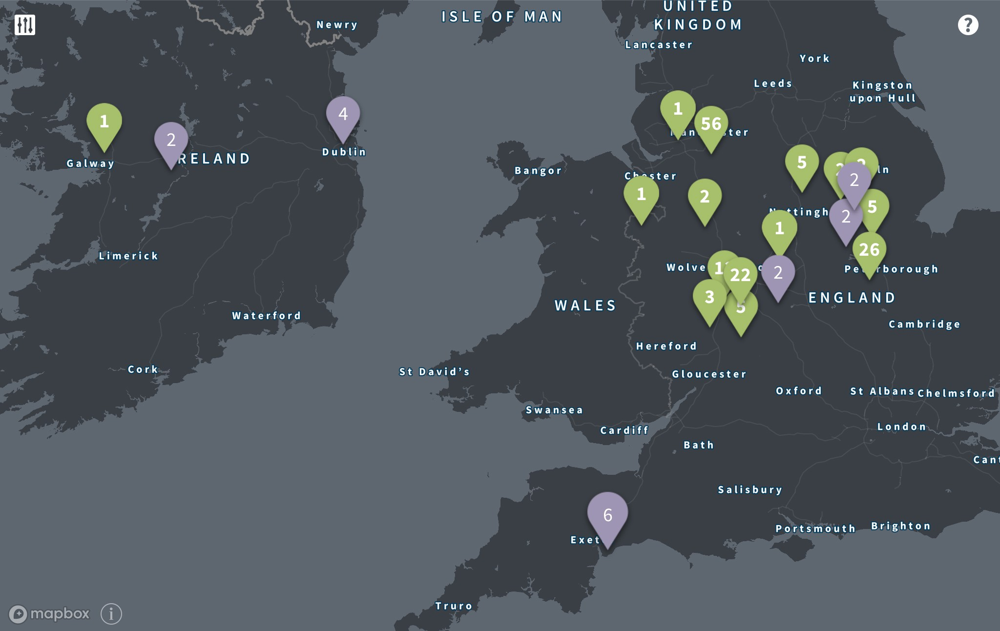

5 things I learnt from researching my family tree
Would I discover my ancestry link to Issac Newton?
Would I discover my ancestry link to Issac Newton?

By Paul Newton, January 2019
Interested in writing blogs on my family history, I joined ancestry.com over Christmas 2018 and uploaded my family tree, one which my mum has been researching and drawing up for the last few years. I wanted to see what the website would make of the tree we had so far, whether it would give us any new hints, and also if it would put us in touch with any long lost relatives. It turns out that ancestry.com knows a lot — a lot — about us already! Here’s a few things I learnt:
I’m not related to the famous physicist (as far as I know). The furthest back we’ve got on our Newton line is my great, great, great, great, great grandfather Timothy Newton, born 1767 in Warwickshire. Issac Newton, born 1643 in Lincolnshire, didn’t have children himself and his known ancestors descend from his great, great uncle. The furthest we’ve got back on any line is George Darby, born 1680 in Staffordshire.
But that isn’t enough to apply for an Irish passport, unfortunately. Most of my UK family originated from Dudley and Birmingham, Lincolnshire, and of course Manchester and Oldham where I was born and raised. At the start of the industrial revolution, the family moved in on Manchester.

Many of my ancestors worked in the textiles industry, or in other working class industries, though many had specialist jobs in these industries such as glass cutters and pearl handle makers. My great, great, great grandfather John was a tripe dresser by trade. My great, great grandfather — another John — was self employed and owned his own horse and cart. A family story is that his horse had learnt to find its own way home, which was handy when John was fast asleep, possibly drunk, in the cart at the end of a working day!
Well, not quite. But a few of the family have migrated to Canada via boat. My great grandma’s cousin William lived in Milan in the 1910s and in 1913 sailed to America and Canada from Genoa on the SS Mendoza, as a commercial traveller. My grandma’s aunt Emma sailed from Liverpool to Halifax, Canada in March 1927 — alone. Starting a new life in Canada at the age of 20 was a very brave thing to do. She settled, got married and had children. My uncle and cousins also live in Canada.
I’ve previously blogged about my grandad’s and great, great grandad’s time in the world wars. I plan to write up my grandma’s brother Jim’s story soon, who moved across Europe as part of the Royal Welsh Fusiliers after D Day. During the war my grandma worked in the Avro factory in Manchester, helping to build the Lancaster Bombers. I remember her telling me stories about seeing German bombers flying up Manchester Street, Oldham. She didn’t take much notice when the air raid sirens sounded at night, especially when she was going out dancing.
Our earliest military ancestor traced is John Hunston, who was in India between 1874 and 78, dying of a fever in Peshawar in 1878 aged 27. We have original letters and a poem he wrote home.
Researching your family history is fascinating. It can help lead to a better understanding of yourself, and will preserve your family story for those who will come after.